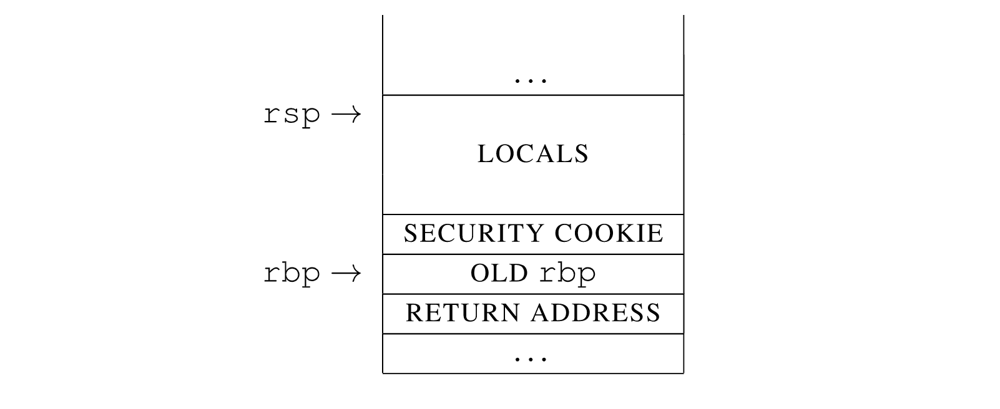
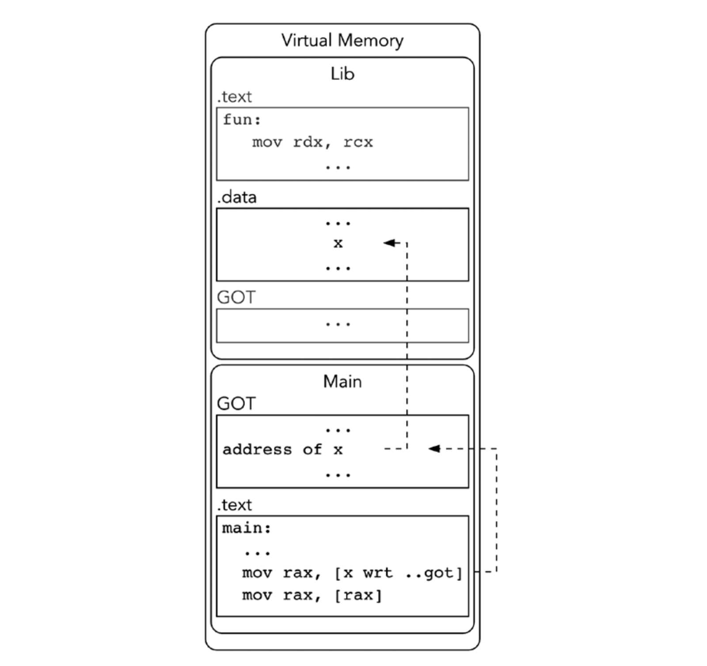

《Low-Level Programming》读书笔记（第 14-17 章）
内容还是太多，所以继续书接上文。
Chapter 14：转换细节
- Page 265SSE（Streaming SIMD Extensions）扩展对应的 128 位寄存器：xmm0 - xmm15，主要被应用在两个场景中：浮点数计算以及 SIMD 指令集。
- Page 265可以使用指令 movq \ movdqa \ movdqu 来操作 xmm 寄存器。其中 movdqa 是对齐版本，而 movdqu 是非对齐版本。大多数的 SSE 指令要求内存操作数是对齐的，否则可能会有性能上的损耗。
- Page 266X86-64 调用规范：
- 保存 Callee-saved 寄存器的值；
- 函数的整型参数*被存放在 rdi \ rsi \ rdx \ rcx \ r8 \ r9 寄存器中；浮点型参数被存放在 xmm0-xmm7 寄存器中。剩下多余的参数直接存放到栈上，最后一个参数将会位于栈顶；对于大于 32 字节或者有非对齐字段的结构体，将会通过栈进行传递。否则各个字段将被拆解为类似函数参数的方式，以寄存器依次进行传递。对于返回值，整型和指针值通过 rax \ rdx 传递；浮点值通过 xmm0 \ xmm1 传递。
- call 指令被调用，同时返回地址被推到栈上。根据 Prologue 与 Epilogue 对函数调用前后的栈进行处理（如：保存旧 rbp，移动 rbp，分配栈空间等）。
- Page 267函数调用的 Prologue 与 Epilogue（除此之外，调用者还需要在函数返回之后清理栈上的参数）。
enter与leave指令可以做到一样的效果，但性能上可能会稍有损耗。
global _start
section .text
inc:
; Prologue;
; enter 0, 0 ; the same effect as Prologue;
push rbp ; save old rbp;
mov rbp, rsp ; set rbp to rsp;
; sub rsp, 24 ; automatic memory allocation;
mov rax, rdi
add rax, 0x1
; Epilogue;
mov rsp, rbp ; set rsp to rbp (deallocate all the allocated memory on the stack);
pop rbp ; restore old rbp;
; leave ; the same effect as Epilogue;
ret ; pop the ret address;
_start:
mov rdi, 0x1 ; save param into rdi;
call inc
sub rsp, 0x8 ; clean stack (params);
mov rdi, rax
mov rax, 60
syscall
- Page 271Red Zone：
- 位于 rsp 的低地址处（-128）。可用于存放本地变量，共 128 字节大小；
- 仅适用于“叶子函数”进行一定的优化；
- 函数仍然可以通过减少 rsp 以获得更大的空间；
- Page 274使用
volatile（易变）关键字可以用来阻止编译器对特定变量写入时的优化（如：编译时求值、常量传播等）。 - Page 276保存并恢复计算上下文（所有的跳转均只能在有效的栈帧中进行，即不能平行跨函数跳转）：
#include <stdio.h>
#include <setjmp.h>
int main(int argc, char** argv) {
jmp_buf jb;
int val = setjmp(jb); // 保存当前的执行上下文；
puts("Hello!");
if (val == 0) {
longjmp(jb, 10); // 恢复执行上下文，并返回值 10；
} else {
puts("End");
}
return 0;
}
- Page 277在使用优化等级参数（-O1\2\3）的情况下，只有被标记为
volatile的局部变量才能在longjmp之后保持其值不变。
#include <stdio.h>
#include <setjmp.h>
int main(void) {
jmp_buf jb;
volatile int sum = 0; // volatile 变量；
int val = setjmp(jb);
puts("Hello!");
sum++;
sum += val;
printf("%d\n", sum);
if (val == 0) {
longjmp(jb, 10);
} else {
puts("End.");
}
return 0;
}
- Page 281
restrict关键字：主要用于标记指针类型，即向编译器承诺只通过该指针来修改所指对象的值，以允许编译器进行特殊的优化。memcpy 函数的 dest 与 src 两个指针也使用了 restrict 关键字，以承诺读取的内存地址与写入地址没有重叠。类似的效果也可以通过 “Strict Aliasing” 来实现，但不推荐。
#include <stdio.h>
int foo(int* restrict px, int* restrict py) {
*px = 0;
*py = 1;
// 由于我们承诺 x 与 y 的值不同（只能通过指针 px 修改 x 的值，只能通过指针 py 修改 y 的值），编译器便可以安全地将这里优化为 “return 0”;
return *px;
}
int main(int argc, char** argv) {
int x = 10;
int y = 10;
printf("%d\n", foo(&x, &y));
return 0;
}
- Page 284一些常见的漏洞利用方法：
- Stack Buffer Overrun：
void foo() {
char buffer[16];
// warning: this program uses gets(), which is unsafe.
gets(buffer); // buffer overrun;
}
int main(int argc, char** argv) {
foo();
return 0;
}
- return-to-libc：
即在 “Stack Buffer Overrun” 的基础上将返回地址设置为 libc 中的某个函数，比如 system()。而该函数一般可以以与被攻击程序相同的权限来执行任意的命令行指令。但在 X86-64 上，借助 ASLR（地址空间布局随机化）的帮助，完成该攻击的几率几乎为零。
- Format Output Vulnerabilities：
#include <stdio.h>
int main(int argc, char** argv) {
char buffer[1024];
gets(buffer);
printf(buffer); // the user input can be treated as format specifiers which is dangerous.
return 0;
}
- Page 287常见的栈溢出保护机制：
- Security Cookie：

通过在旧 rbp 值的高地址侧插入一个 Stack Guard 的方式来检测 Stack Overrunning 是否发生。在 ret 指令执行之前，编译器会发出特殊检查，以验证 Stack Guard 的完整性。如果发现其值被更改则会直接终止程序的执行。该技术默认在 GCC 及 MSVC 中开启。
- ASLR（Address Space Layout Randomization）：
将每个 Program Segment 都加载到地址空间中的随机位置上，这使得猜测函数的正确地址变得几乎不可能。大部分常用的操作系统均支持该功能。
- EDP（Data Execution Prevention）：
此技术可以保护某些内存页，以避免执行存储在这些内存页上的指令。
Chapter 15：共享对象和代码模型
- Page 292现代的 GNU 风格的哈希表通常会使用 Bloom 过滤器来检查某个元素是否被定义在目标文件中。
- Page 292可以使用 LD_PRELOAD 环境变量来控制每个应用程序在运行前需要第一个进行动态链接的共享库（如果在该库中找到符号，则后续 libc \ libcxx 中的符号便不会再被使用。因此可用于实现某些代码注入的目的）。
- Page 295基于 GOT 的符号相对寻址示意图（更直观一些）：

- Page 297PLT 位于 .text 段，主要用于函数符号的 Lazy-Resolving。
- Page 304一个应用 GOT / PLT 的汇编例子：
主程序（main.asm）：
extern _GLOBAL_OFFSET_TABLE_ ; should be imported in every DL files.
global _start
extern foo
section .text
_start:
call foo wrt ..plt ; create a PLT entry, use %rip relative address.
mov rdi, 0
mov rax, 60
syscall
共享库（lib.asm）：
extern _GLOBAL_OFFSET_TABLE_
global foo:function
section .rodata
msg: db "SO function called.", 10
.end
section .text
foo:
mov rax, 1
mov rdi, 1
lea rsi, [rel msg] ; -> lea rsi, [rip + offset];
mov rdx, msg.end - msg ; calculate the string length;
syscall
ret
编译运行：
nasm -flef64 main.asm -o main.o
nasm -flef64 lib.asm -o lib.o
ld -shared lib.o -o lib.so
ld --dynamic-linker=/lib64/ld-linux-x86-64.so.2 main.o lib.so -o main
LD_LIBRARY_PATH=. ./main # "SO function called.";
- Page 307一个完整的 Dynamic Linking 的例子：
主程序（main.asm）：
extern _GLOBAL_OFFSET_TABLE_
extern foo
global common_msg:data common_msg.end - common_msg ; export data with type and size attribute;
global mainfoo:function
global _start
section .rodata
common_msg: db "common msg.", 10, 0
.end:
main_msg: db "main msg.", 10, 0
section .text
_start:
call foo wrt ..plt
mov rax, 60
mov rdi, 0
syscall
mainfoo:
mov rax, 1
mov rdi, 1
mov rsi, main_msg
mov rdx, 8
syscall
ret
共享库（lib.asm）：
extern _GLOBAL_OFFSET_TABLE_
extern common_msg
extern mainfoo
global foo:function
section .rodata
msg: db "foo", 10, 0
section .text
foo:
mov rax, 1
mov rdi, 1
lea rsi, [rel msg] ; access msg via relative address;
mov rdx, 6
syscall
call bar
call mainfoo wrt ..plt
ret
bar:
mov rax, 1
mov rdi, 1
mov rsi, [rel common_msg wrt ..got]
mov rdx, 5
syscall
ret
- Page 313GCC 中可以使用
__attribute__((visibility("hidden")))来控制共享库中符号对外部的可见性。优点：通过隐藏不需要导出或仅用于共享库内部的函数，可以保证共享库的对外接口足够简洁并易于维护。当然，也可以选择将符号定义为 static，使其作用域仅限于当前的编译单元。
__attribute__((visibility("hidden")))
void foo() {} // 会变成 local 符号；
- 可以选择在编译时为 GCC 传递 “-fvisibility=hidden” 来隐藏所有符号，然后仅将需要的符号再显式导出。
- Page 315GCC 中可以通过为标记为 “hidden” 的内部方法添加
__attribute__((alias("aliasName")))别名的方式，使得它们在被 wrapper 方法调用时减少一次内存地址的解引用过程（是依赖于编译器的特性）。 - Page 317X86-64 Code Model（GCC）：
- -mcmodel=small：程序和使用到的符号必须在 VAS 的低 2 GB 位置内被链接，指针为 64 bits；
- -mcmodel=kernel：内核在负 2 GB 的 VAS 中运行；
- -mcmodel=medium：程序链接在 VAS 的低 2 GB 空间中，小尺寸符号也被放置在此处。较大尺寸的数据被放在 .bss 或者 VAS 的高 2GB 空间中；
- -mcmodel=large：该模型不对 Section 的地址和大小做任何假设；
Chapter 16：性能
- Page 328在大多数情况下，过早地进行优化都不会是一个很好的选择。
- Page 329优化方法：省略栈帧寄存器 rbp，改用 “rsp-relative addressing”（对应 -fomit-frame-pointer，目前在 -O1 及以上的优化中是默认启用的）。潜在问题：栈帧的特征信息变少可能不利于优化之后的代码调试。
- Page 331优化方法：尾递归（对应 -foptimize-sibling-calls）。本质就是把递归（call）变成了“循环”（jmp），前提是递归点之后，ret 之前没有再需要执行的指令。尾递归的条件：
- 直接返回结果，而不参与递归运算；
- 递归调用自己但直接返回，不参与其他运算过程；
使用尾递归版本的 Factorial 阶乘：
global _start
section .text
fact:
mov r11, rsi
.start:
test rdi, rdi
je fact.ret
imul r11, rdi
dec rdi
jmp fact.start
.ret:
ret
_start:
mov rdi, 3
mov rsi, 1
call fact
mov rax, 60
mov rdi, r11
syscall
不使用尾递归版本的 Factorial 阶乘：
global _start
section .text
fact:
cmp rdi, 1
je fact.last
push rdi ; no need to subtract/addition %rsp here for push/pop.
dec rdi
call fact
pop rsi ; get stack value;
imul rax, rsi
jmp fact.ret
.last:
mov rax, 1
.ret:
ret
_start:
mov rdi, 3
call fact
mov r11, rax
mov rax, 60
mov rdi, r11
syscall
- Page 333优化方法：公共子表达式消除（对应 -fgcse）。对于两个表达式中的公共部分，将会被单独求值，然后在多个表达式中共享计算结果。
- Page 334优化方法：常量传播（对应 -fipa-cp \ -fgcse \ -fipa-cp-clone）。即对于部分仅依赖于常量的表达式，可以进行编译时求值。
- Page 336优化方法：RVO \ NRVO。可以减少不必要的栈对象拷贝操作。一般会通过 rdi 隐式传递给构造对象的方法一个参数，方法在其内部直接在根据该隐式参数计算出来的地址上构造对象。
- Page 338诸如 if-else \ switch-case 等条件结构可能导致分支预测（Branch Prediction）失败进而产生 CPU 时钟损耗。
- Page 339对某些汇编中的循环结构进行适当的 unroll 能够有效利用 CPU 的多流水并行机制来加速执行的执行。
- Page 340尽量将内存的读写（寄存器 <-> 内存）操作分离到不同的区域以避免这两种类型的指令交错，可以在一定程度上减少 CPU 特殊的上下文切换过程，提高指令执行效率。
- Page 348以线性按顺序的方式访问内存，会相较于随机访问有着更好的性能，
- Page 349英特尔推出了一个名为 AVX 的新扩展（对比与原有的 SSE 扩展），它具有新的寄存器 ymm0-ymm15，其宽度为 256 位。其中最低有效的 128 位可以作为旧的 xmm（128 位）寄存器进行访问。SIMD 的实际性能取决于 CPU 的 ALU（Arithmetic Logic Unit）的个数。一个简单的基于 SSE 的 SIMD 示例：
section .data
arr_x: dd 1, 0, 1, 1
arr_y: dd 1, 1, 0, 1
section .bss
arr_sum: resd 4
global _start
section .text
_start:
movaps xmm0, [arr_x]
addps xmm0, [arr_y]
movaps [arr_sum], xmm0
xor rax, rax
xor rdi, rdi
.loop:
cmp rdi, 0x4
je _start.end
add eax, dword[arr_sum + 4 * rdi]
inc rdi
jmp _start.loop
.end:
mov r11, rax
mov rax, 60
mov rdi, r11 ; 6;
syscall
- 编译器通常会使用 SSE 指令来进行浮点数运算（如：
mulss）。
Chapter 17：多线程
- Page 357进程的组成：
- VAS — 部分被可执行文件代码、数据、共享库以及其他映像文件占据。其部分地址可以与其他进程共享；
- 所有相关的状态信息：打开的文件描述符、寄存器等；
- 进程 ID、进程组 ID、用户 ID、组 ID；
- 其他用于进程间通信的资源：管道、信号量、消息队列等；
- Page 358线程可以自己维护的资源/状态：
- 寄存器；
- 栈（由栈指针寄存器定义，因此可能被其他线程修改）；
- 调度相关的属性，比如优先级；
- 等待和阻止信号；
- 信号掩码；
- Page 363内存栅栏指令：
mfence\sfence。
评论 | Comments